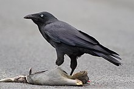
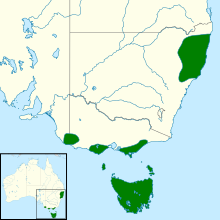

Forest raven
| Forest raven | |
|---|---|
|  | |
| With roadkill, Collinsvale, Tasmania | |
| Scientific classification | |
| Kingdom: | Animalia |
| Phylum: | Chordata |
| Class: | Aves |
| Order: | Passeriformes |
| Family: | Corvidae |
| Genus: | Corvus |
| Species: | C. tasmanicus
|
| Binomial name | |
| Corvus tasmanicus Mathews, 1912
| |
|  | |
| Distribution map | |
| Synonyms | |
|
Corvus australis Gmelin, 1788 | |
{kind=link}
{kind=link}
The forest raven (Corvus tasmanicus), also commonly known as the Tasmanian raven, is a passerine bird in the family Corvidae native to Tasmania and parts of southern Victoria, such as Wilsons Promontory and Portland. Populations are also found in parts of New South Wales, including Dorrigo and Armidale. Measuring 50–53 cm (20–21 in) in length, it has all-black plumage, beak and legs. As with the other two species of raven in Australia, its black feathers have grey bases. Adults have white irises; younger birds have dark brown and then hazel irises with an inner blue rim. New South Wales populations are recognised as a separate subspecies C. tasmanicus boreus, but appear to be nested within the Tasmanian subspecies genetically.
The forest raven lives in a wide variety of habitats in Tasmania but is restricted to more closed forest on mainland Australia. Breeding takes place in spring and summer, occurring later in Tasmania than in New South Wales. The nest is a bowl-shaped structure of sticks sited high in a tree. An omnivorous and opportunistic feeder, the forest raven eats a wide variety of plant and animal material, as well as food waste from urban areas and roadkill. It has been blamed for killing lambs and poultry and raiding orchards in Tasmania, and is unprotected under Tasmanian legislation. The forest raven is sedentary, with pairs generally bonding for life and establishing permanent territories.
Taxonomy and naming[edit]
John Latham described the "South-Seas raven" in 1781, with loose throat feathers and found in "the Friendly Isles" in the South Seas, but did not give a binomial name.[2] Although "the Friendly Isles" refers to Tonga,[3] the specimen resembles what is now known as the forest raven and was collected by ships' surgeon William Anderson on the third voyage of James Cook in January 1777. Of the species, he had written, "Crows, nearly the same as ours in England". Tasked as the expedition's naturalist, Anderson collected many bird specimens but had died of tuberculosis in 1778 before the return home. Many collection localities were incorrect, and notes were lost or pieced together many years later.[4] German naturalist Johann Friedrich Gmelin gave the species the name Corvus australis in the 13th edition of Systema naturae in 1788.[5]
Since Australia was settled by Europeans, all species of crows and ravens have been colloquially known as crows by the general population and are difficult to distinguish.[3] In his 1865 Handbook to the Birds of Australia John Gould noted a single species of corvid in Australia, Corvus australis, which he called the white-eyed crow. He used Gmelin's 1788 name, which took precedence by virtue of its age over Vigors and Horsfield's description.[6] In 1912 Scottish naturalist William Robert Ogilvie-Grant clarified the species as C. coronoides (raven, and incorporating little and Australian ravens) and C. cecilae (Torresian crow).[7] Subsequently, French-American ornithologist Charles Vaurie acted as First Revisor under Article 24 of the International Code of Zoological Nomenclature (ICZN) Code and discarded C. australis as a junior homonym – in 1788 Gmelin had used the same binomial name to describe the black nunbird – to preserve the stability of the name.[8] This has been followed by later authors.[9]
Gregory Mathews described the forest raven as a distinct subspecies (Corvus marianae tasmanicus) of the Australian raven in 1912,[a] its species name derived from Tasmania, the type locality.[10] Ian Rowley raised the forest raven to species rank in 1970, noting there were no intermediate forms between it and the little raven (its closest relative) and that it was clearly larger with a much more massive bill. He described a second subspecies (Corvus tasmanicus boreus) the same year, observing that C. tasmanicus from Tasmania and southern Victoria has a very short tail compared with individuals from the northern New South Wales population.[3] The term "crow" is colloquially applied to any or all species of Australian corvid. In 1970 Rowley gave the species name "forest raven",[3] which was later designated the official name by the International Ornithologists' Union (IOC).[11]
| Australasian corvids | |||||||||||||||||||||||||||||||||||||||
| |||||||||||||||||||||||||||||||||||||||
| Based on Jønsson et al. 2012[12] |
Preliminary genetic analysis of the genus using mitochondrial DNA showed the three raven species to belong to one lineage and the two crows to another, and that the two lineages are not closely related. The genetic separation between species is small and there was a suggestion the forest raven may be conspecificity with the Australian raven.[13] Subsequent multigene analysis using nuclear DNA by Jønsson and colleagues in 2012 clarified that the forest and little raven are each other's closest relative. The northern subspecies boreus turned out to be nested in the Tasmanian tasmanicus, indicating the populations separated very recently.[12] It is still recognised as a distinct subspecies by the International Ornithological Committee.[14]
Ian Rowley proposed that the common ancestor of the five species diverged into a tropical crow and temperate raven sometime after entering Australia from the north. The raven diverged into the ancestor of the forest and little ravens in the east and Australian raven in the west. As the climate was cooler and drier, the aridity of central Australia split them entirely as the habitat between became inhospitable. Furthermore, the eastern diverged into nomadic little ravens and, in forested refuges, forest ravens. As the climate eventually became warmer, the western ravens spread eastwards and outcompeted forest ravens on mainland Australia, as evidenced by the forest ravens' being found only in closed forest refuges on the mainland but in a wider variety of habitats in Tasmania.[15]
Description[edit]
{kind=link}
The largest of the Australian corvids, the adult forest raven is 50–53 cm (20–21 in) long with a wingspan of 91–113 cm (36–44 in) and weighing approximately 650 g (1.43 lb). There is no seasonal variation in plumage, which is entirely glossy black with a blue or green sheen visible on the upperparts.[10] The wings are long and broad, with the largest of its ten primary feathers (usually the seventh but occasionally the eighth) almost reaching the end of the tail when at rest. The tail is rounded or wedge-shaped. It is quite short in Tasmanian populations but longer in northern New South Wales. The beak is a similar shape to that of the little raven, though more massive and heavy-set. The upper mandible, including the nares and nasal groove, is covered with bristles.[16] The mouth and tongue are black, as are the powerful legs and feet. The tibia is fully feathered and the tarsus is long.[17]
Sexes have identical plumage; the male is generally larger, but there is considerable overlap in size between individuals.[10] The forest raven can be distinguished from the two species of crow occurring in Australia by the grey base of the feathers, which is white in the latter species. The demarcation between pale and black regions on the feather is gradual in the ravens and sharply delineated in the crows. Feather bases are not normally visible when observing birds in the field, but can sometimes be seen on a windy day if the feathers are ruffled.[18] The three species of raven are more heavily set with a broader chest than the two crow species, with the forest raven the stockiest of all.[19] Relative size is useful only when two species can be seen side by side, as the overlap in size is large and the difference in size small.[20] In Tasmania, the forest raven could be confused with the black currawong, though the latter species has more slender wings with white markings, a longer tail and a very different call.[21]
Juveniles (birds up to a year old) have a shorter, shallower bill, which is dark grey with some pink at the base. The gape is pink. The plumage is softer and fluffier and often has a brown tint. It generally lacks the glossy sheen of adult birds, though a blue-purple sheen can be seen sometimes on mantle and shoulders plumage. Birds between one and two years old closely resemble adults but retain juvenile feathers on wings and tail and have smaller bills.[10] Birds between two and three years have adult plumage but lack the adult eye colour.[21] Eye colour varies with age: nestlings up to four months old have blue-grey eyes, juveniles aged from four to fourteen months have brown eyes, and immature birds have hazel eyes with blue eyerings around the pupil until age two years and ten months.[3][b]
Vocalization[edit]
The call is considered the most reliable means of identification in areas where the forest raven's range overlaps with other corvids. It is a deep and husky "korr-korr-korr-korr" with a similarly drawn out last note to the Australian raven. It can also utter a barking alarm call. The calls of juveniles have a higher pitch than those of adult birds. Mated pairs greet each other with a specific return-home call; a long extended descending call, and characteristic flapping flight with reduced-amplitude wingbeats.[22]
Distribution and habitat[edit]
{kind=link}
The only member of the corvid family that has a permanent population in Tasmania,[23] the forest raven is the most widely distributed bird species in the state.[24] There are three populations in southern Victoria: from the vicinity of Lakes Entrance west across Gippsland to Wilsons Promontory, the Otway Ranges from 10 km (6.2 mi) west of Torquay to Port Campbell, and lastly in the Grampians and Millicent Plain extending into south-east South Australia. Isolated records suggest the latter two populations may actually be continuous.[24] There are two disjunct populations in northern New South Wales. A coastal population is found from Tea Gardens north to Yuraygir National Park, while a more montane population is found along the Great Dividing Range and New England Tableland from Gloucester Tops in the south to Tenterfield in the north. The gap between the two populations is around 70 km (43 mi), shrinking to 30 km (19 mi) at Dorrigo.[24]
The forest raven inhabits a wide range of habitat within Tasmania such as woods, open interrupted forest, mountains, coastal areas, farmland and town and city fringes.[21] A survey of Mount Wellington found it to be one of the few birds that remained in open and marshland habitat at higher elevations over the winter.[25] Additionally, research within Tasmania found that ravens were thirty percent more likely to be observed in farmland habitat than in non-agricultural forested or urban areas.[26] On mainland Australia it appears to be more confined to forests: wet and dry sclerophyll forest and cool temperate rainforest, as well as pine plantations in Victoria.[21] Populations in Victoria and New South Wales are possibly expanding,[21] with the species more evident in towns such as Forster-Tuncurry and Port Macquarie,[24] and along segments of the Oxley Highway between Wauchope and Walcha, and Thunderbolts Way between Gloucester and Nowendoc, most likely due to roadkill from increased vehicular traffic.[27] It is unclear whether records since the 1970s in areas where the forest raven was unknown are the result of range expansion or improved field observations and identification.[27]
Forest ravens fly from Tasmania and the mainland to islands well offshore in Bass Strait and may even traverse the strait entirely. First recorded on King Island in Bass Strait in 1979, the forest raven has become more numerous and flocks of several hundred birds were recorded by 1997. The island was previously inhabited by little ravens.[27]
Behaviour[edit]
Sedentary and territorial, the forest raven is similar in breeding and feeding habits to the Australian raven.[28] A single breeding pair and their brood occupy a territory of variable size – areas of 40 to 400 ha (99 to 988 acres) have been recorded – and remains there year-round, though groups of ravens may enter this area to forage. In northern New South Wales, forest ravens have been recorded nesting near Australian ravens and Torresian crows. They were observed warding off the Australian ravens but to a degree permitting the crows to pass through their territories.[29] Forest ravens will defend their territory by chasing and mobbing intruding birds of prey as large as wedge-tailed eagles and white-bellied sea eagles. Agonistic displays to ward off potential intruders include flying to a high perch and calling loudly with head extended and hackles raised. Forest ravens will give their wings a flick on the upward wingbeat when flying to the perch and may continue flicking their wings after landing.[22] Subadult and nonbreeding forest ravens form flocks that move around, though they may use the same roosting site for a few months at a time.[29] Forest ravens generally walk when moving around on the ground, though do hop when hurrying, such as when trying to avoid an oncoming car on a road.[21]
Breeding[edit]
Forest ravens breed after at least three years and form monogamous pairs.[29] Birds breed later in Tasmania than in mainland Australia, though the species has been little studied. Eggs have been recorded from July to September and nestlings in September and October in New South Wales,[22] while nestlings have been noted from September to December in Victoria. In Tasmania, the breeding season appears to take place from August to January.[30] Forest ravens generally nest in forks in tall trees, usually eucalypts, below the canopy line. They have been recorded as nesting on the ground on some Bass Strait Islands.[30] Breeding success rates were impacted severely by droughts in New South Wales.[28]
The nest is a bowl-shaped structure of twigs lined with available materials such as leaves, wool, grass, bark, feathers, or occasionally horse manure or hair from cattle. The sticks are generally 4–14 mm (0.16–0.55 in) thick. Nests are sometimes renovated from previous years.[30] A clutch can comprise up to six eggs, though usually four or five are laid. Measuring 45 by 31 mm (1+3⁄4 × 1+1⁄4 in), eggs are green-cream and splotched with brown and grey markings. Eggs are laid every one to two days.[30] Eggs are quite variable, and thus which Australian corvid laid them cannot be reliably identified.[31] Incubation of the eggs is done solely by the female. The chicks are altricial and nidicolous; that is, they are born helpless, naked, and blind, and remain in the nest for an extended period. Both parents feed the young.[30]
Feeding[edit]
{kind=link}
The forest raven is an omnivore, though it eats more meat than other smaller corvids.[32] Its diet includes a wide range of foods such as insects, carrion, fruit, grain, and earthworms. It has been known to attack and eat birds as large as the little penguin, though many birds and mammals are already dead when encountered.[33] In general a significant proportion of its food appears to come from habitats in or near water.[28] Forest ravens observed on the beach at Wilson's Promontory would glean the sand and turn over or disturb pieces of seaweed and debris for insect prey.[34] They have also been reported taking crabs from sandbars and raiding seabird colonies for eggs and young.[35]
Forest ravens forage in pairs or groups of up to ten birds, though they may gather in much larger numbers if there is an abundant food source, such as a large carcass, rubbish, or insect swarm.[35] The species is attracted to areas where people have discarded excess food, such as rubbish tips, picnic grounds, parks, gardens, and roads.[24] Forest ravens sometimes forage in mixed-species flocks with Torresian crows, little and Australian ravens. In these situations the more abundant species may exclude the less abundant. In Tasmania, forest ravens have been recorded foraging with Pacific and silver gulls, and black currawongs.[35] Foraging takes place in the early morning or late afternoon; birds rest in the hotter part of the day.[33] Food is taken mainly from the ground, birds either find objects while walking along and looking and turn over objects with their bills as they go.[35] Forest ravens often fly 1–2 m (3.3–6.6 ft) above the ground over marshland, heath, or beaches looking for food.[21] Nests of various birds, including domestic chickens and burrowing seabirds, have been raided for eggs and young.[35] Forest ravens have been observed attempting to raid the nest of ospreys on the New South Wales north coast.[28]
The species is often observed scavenging, particularly on roadkill. Across much of Tasmania, forest ravens have benefited from the disease-driven decline of the Tasmanian devil (Sarcophilus harrisii) due to greater access to carrion.[36] Additionally, forest ravens appear to scavenge heavily on roadkill throughout the entire year on the Bass Strait islands where mammalian scavengers, like devils and quolls, are now absent. In contrast, forest ravens within Tasmania appear to scavenge heavily on roadkill only during Autumn, when other resources like invertebrates and fruit are sparse.[37]
Forest ravens cache food items for later consumption, generally using trees to evade other scavengers. Field observations in Nambucca showed that they built stick-like platforms 30–40 cm (12–16 in) in diameter high in the canopies of trees as places to store and eat food. They were recorded storing food in tree forks 10–20 m (33–66 ft) above the ground and within the folds of the bark of paperbark trees. In another field study, a forest raven stole a cape barren goose egg and hid it in a grassy tussock to consume later.[33]
Alongside Australian ravens, forest ravens have been blamed for damaging orchards and killing lambs and poultry. This is not supported by fieldwork.[27] They most often scavenge for afterbirth and newborn lamb feces, which are highly nutritious.[33] They are thought to have a beneficial role in cleaning up carcasses and consuming insect pests.[33] Forest ravens prey on the larvae of the pasture beetle Scitala sericans. The beetle can damage pastures and is an agricultural pest; the raven may uproot plants when digging out the grubs.[38]
Parasites[edit]
The mite Knemidocoptes intermedius has been isolated from the forest raven. Infestation results in crusty grey lesions (knemidocoptiasis) around their tibiotarsal joints (ankles), caused by the mites living in tunnels under the skin.[39] The channel-billed cuckoo (Scythrops novaehollandiae) has been recorded as a brood parasite.[30]
Conservation status[edit]
Its large range and abundance mean the bird is classified as "least concern" on the IUCN Red List; some decrease has been noted but it is of insufficient size or duration to change classification.[1] The populations of northern New South Wales have been classified as "near threatened" in 2000 by Garnett and Crowley and were estimated at the time to number about 10,000 breeding pairs.[27]
Relationship with humans[edit]
Like the Australian raven on mainland Australia, the forest raven in Tasmania has a history of being shot or poisoned – generally by farmers as it is perceived to be a threat to livestock and orchard crops.[27] It is not protected under Tasmania's Nature Conservation Act 2002 and no permit is required if landowners seek to kill them.[40] Larger numbers of forest ravens (alongside swamp harriers and brown falcons) were killed in 1958 as rabbit populations dwindled due to myxomatosis and predatory birds were thought to have turned their attention to poultry and livestock.[41] Studies on corvids elsewhere in Australia showed that the killing of healthy lambs was rare, but that sick animals were predisposed to be attacked, and hence their poor reputation was unjustified.[42] Forest ravens may do more good than harm by preying on insects and removing carrion. Research within Tasmania has found that forest ravens are six times more likely to be observed in areas of high roadkill density compared to areas of no roadkill.[26] Despite their fondness for roadkill, forest ravens are rarely hit by vehicles.[27]
Notes and references[edit]
- Higgins, Peter Jeffrey; Peter, John M.; Cowling, S.J., eds. (2006). Handbook of Australian, New Zealand, and Antarctic Birds. Vol. 7: Boatbill to Starlings. Melbourne, Victoria: Oxford University Press. ISBN 978-0195539967.
- ^ a b BirdLife International (2016). "Corvus tasmanicus". IUCN Red List of Threatened Species. 2016: e.T22733499A95059507. doi:10.2305/IUCN.UK.2016-3.RLTS.T22733499A95059507.en. Retrieved 19 November 2021.
- ^ Latham, John (1781). A General Synopsis of Birds. Vol. 1. London, United Kingdom: Benj. White. p. 369. Archived from the original on 2 January 2019. Retrieved 20 February 2018.
- ^ a b c d e f Rowley, Ian (1970). "The Genus Corvus (Aves: Corvidae) in Australia". CSIRO Wildlife Research. 15 (1): 27–71. doi:10.1071/CWR9700027.
- ^ Stresemann, Erwin (1950). "Birds collected during Capt. James Cook's last expedition (1776–1780)" (PDF). The Auk. 67 (1): 66–88. doi:10.2307/4080770. JSTOR 4080770. Archived (PDF) from the original on 5 March 2016. Retrieved 27 August 2014.
- ^ Gmelin, Johann Friedrich (1788). Systema naturae per regna tria naturae :secundum classes, ordines, genera, species, cum characteribus, differentiis, synonymis, locis /Caroli a Linné. Vol. 1. Leipzig, Germany: Impensis Georg. Emanuel. Beer. p. 365. Archived from the original on 2 January 2019. Retrieved 20 February 2018.
- ^ Gould, John (1865). Handbook to The birds of Australia. Vol. 1. London, United Kingdom: self. p. 475. Archived from the original on 2 January 2019. Retrieved 20 February 2018.
- ^ Ogilvie-Grant, William Robert (1912). "The Crows of Australia". Emu. 12 (1): 44–45. doi:10.1071/MU912044.
- ^ Vaurie, Charles (1962). Mayr, Ernst (ed.). Check-list of Birds of the World. Vol. 15 (XV ed.). Cambridge, Massachusetts: Harvard University Press. p. 261. Archived from the original on 21 August 2017. Retrieved 20 February 2018.
- ^ Schodde, Richard; Mason, I. J. (1999). Directory of Australian Birds: Passerines. Collingwood, Victoria: CSIRO. p. 609. ISBN 978-0643102934.
- ^ a b c d Higgins 2006, p. 717.
- ^ Gill, Frank; Donsker, David, eds. (2021). "Crows, mudnesters, melampittas, Ifrit, birds-of-paradise". World Bird List Version 11.2. International Ornithologists' Union. Archived from the original on 1 July 2018. Retrieved 26 October 2021.
- ^ a b Jønsson, Knud A.; Fabre, Pierre-Henri; Irestedt, Martin (2012). "Brains, tools, innovation and biogeography in crows and ravens". BMC Evolutionary Biology. 12: 72. doi:10.1186/1471-2148-12-72. PMC 3480872. PMID 22642364.
- ^ Haring, Elisabeth; Däubl, Barbara; Pinsker, Wilhelm; Kryukov, Alexey; Gamauf, Anita (2012). "Genetic divergences and intraspecific variation in corvids of the genus Corvus (Aves: Passeriformes: Corvidae) – a first survey based on museum specimens" (PDF). Journal of Zoological Systematics and Evolutionary Research. 50 (3): 230–246. doi:10.1111/j.1439-0469.2012.00664.x. Archived from the original (PDF) on 25 January 2021. Retrieved 31 May 2013.
- ^ Gill, Frank; Donsker, David (15 January 2015). "Crows, mudnesters & birds-of-paradise". IOC World Birdlist. Archived from the original on 29 November 2019. Retrieved 2 February 2015.
- ^ Rowley, Ian; Vestjens, W.J.M. (1973). "The Comparative Ecology of Australian Corvids. VI. Why five species?". CSIRO Wildlife Research. 18 (1): 157–169. doi:10.1071/CWR9730157.
- ^ Higgins 2006, p. 727.
- ^ Higgins 2006, p. 726.
- ^ Higgins 2006, p. 692.
- ^ Higgins 2006, p. 693.
- ^ Higgins 2006, p. 694.
- ^ a b c d e f g Higgins 2006, p. 718.
- ^ a b c Higgins 2006, p. 724.
- ^ Thomas, R; Thomas, S; Andrew, D; McBride, A (2011). Storer, P (ed.). The complete guide to finding the birds of Australia (2nd ed.). Collingwood, Victoria, Australia: CSIRO Publishing. p. 370. ISBN 978-0643097858. Archived from the original on 9 February 2023. Retrieved 1 November 2020.
- ^ a b c d e Higgins 2006, p. 719.
- ^ Ratkowsky, A.V.; Ratkowsky, D.A. (1978). "A survey of the birds of the Mt Wellington Range, Tasmania, during the non-breeding months". Emu. 78 (4): 223–226. doi:10.1071/MU9780223.
- ^ a b Fielding, Matthew W.; Buettel, Jessie C.; Nguyen, Hanh; Brook, Barry W. (30 June 2019). "Ravens exploit wildlife roadkill and agricultural landscapes but do not affect songbird assemblages". Emu – Austral Ornithology. 120: 11–21. doi:10.1080/01584197.2019.1629820. S2CID 198423778.
- ^ a b c d e f g Higgins 2006, p. 720.
- ^ a b c d Debus, S.J.S.; Rose, A.B. (2006). "Supplementary Data on Breeding and Diet of the Northern Forest Raven Corvus tasmanicus Boreus". Australian Field Ornithology. 23 (2): 96–101. ISSN 1448-0107.
- ^ a b c Higgins 2006, p. 723.
- ^ a b c d e f Higgins 2006, p. 725.
- ^ Rowley, Ian (1973). "The Comparative Ecology of Australian Corvids. IV. Nesting and the rearing of young to independence". CSIRO Wildlife Research. 18 (1): 91–129. doi:10.1071/CWR9730091.
- ^ Rowley, Ian; Vestjens, W.J.M. (1973). "The Comparative Ecology of Australian Corvids. V. Food". CSIRO Wildlife Research. 18 (1): 131–155. doi:10.1071/CWR9730131.
- ^ a b c d e Higgins 2006, p. 722.
- ^ Fitzsimons, James (2003). "Beach-foraging behavior of Forest Ravens Corvus tasmanicus and an Australian Magpie Gymnorhina tibicen at Wilsons Promontory, Victoria". Australian Field Ornithology. 20 (1): 24–27. ISSN 1448-0107.
- ^ a b c d e Higgins 2006, p. 721.
- ^ Cunningham, Calum X.; Johnson, Christopher N.; Barmuta, Leon A.; Hollings, Tracey; Woehler, Eric J.; Jones, Menna E. (5 December 2018). "Top carnivore decline has cascading effects on scavengers and carrion persistence". Proceedings of the Royal Society B: Biological Sciences. 285 (1892): 20181582. doi:10.1098/rspb.2018.1582. PMC 6283947. PMID 30487308.
- ^ Fielding, Matthew W.; Buettel, Jessie C.; Brook, Barry W.; Stojanovic, Dejan; Yates, Luke A. (2021). "Roadkill islands: Carnivore extinction shifts seasonal use of roadside carrion by generalist avian scavenger". Journal of Animal Ecology. 90 (10): 2268–2276. doi:10.1111/1365-2656.13532. PMID 34013520. S2CID 234792390.
- ^ Hardy, R.J. (1977). "The Biology And Behaviour Of The Pasture Beetle Scitala Sericans Erichson (Scarabaeidae: Melolonthinae)". Australian Journal of Entomology. 15 (4): 433–440. doi:10.1111/j.1440-6055.1976.tb01726.x.
- ^ Mason, R.W.; Fain, A. (1988). "Knemidocoptes intermedius identified in forest ravens (Corvus tasmanicus)". Australian Veterinary Journal. 65 (8): 260. doi:10.1111/j.1751-0813.1988.tb14316.x. PMID 3190595.
- ^ Wildlife Management Branch (2010). "Permits and Regulations". Wildlife Management. Department of Primary Industries, Parks, Water and Environment (Tasmania). Archived from the original on 11 January 2015. Retrieved 10 January 2015.
- ^ Sharland, Michael (1958). "Branch reports: Tasmania". Emu. 58 (1): 42–53 [43–44]. doi:10.1071/MU958042.
- ^ Rowley, Ian (1969). "An evaluation of predation by 'crows' on young lambs". CSIRO Wildlife Research. 14 (2): 153–179. doi:10.1071/CWR9690153.
External links[edit]
- Media related to Corvus tasmanicus at Wikimedia Commons
- Data related to Corvus tasmanicus at Wikispecies
{kind=link}
{kind=link}